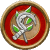

德鲁伊
Druid
自然之力其势无人可挡。或是烧之成灰，或是埋之以雪，或是葬之以水，自然仅需一盏茶的功夫就能毁灭最为坚固的堡垒，将最为雄伟宏大的奇观化为瓦砾。它能给那些尊重者带来不可尽数的恩惠与叹为观止的绝景，也能给轻蔑者带来无比痛苦的毁灭。你乃倾听自然之声者，敬畏其威严，伺之以己身。
关键属性 Key Ability
感知
在1级时，你的职业给你在感知上的一次属性提升
生命值 Hit Points
8 + 你体质调整值
你在1级和之后的每个等级，将你的最大生命值增加这个数值
- 初始熟练 Initial Proficiencies
- 1级时，你在下面这些数据上获得所列的熟练等级。你在任何未列出的项目上都是未受训，除非你通过其他方式获得了更高的熟练等级。
- 察觉 Perception
- 察觉-受训
- 豁免骰 Saving Throws
- 强韧-受训，反射-受训，意志-专家
- 技能 Skills
- 自然-受训，在由你德鲁伊派系决定的一个技能上受训，在数量等于2 + 你智力调整值的额外技能上受训
- 攻击 Attacks
- 简易武器-受训，无武装攻击-受训
- 防御 Defenses
- 轻甲-受训，中甲-受训，无甲防御-受训
- 法术 Spells
- 原能法术攻击-受训，原能法术DC-受训
在战斗遭遇中…… During Combat Encounters...
你召唤大自然的力量对抗你的敌人，保护你的队友。
你施展原能魔法保护你和你的伙伴，或是以此治愈伤痛，或是召唤致命的动物们与你并肩战斗。根据你的自然纽带，你可以施展威力无穷的元素魔法或是变身成可怖的野兽。
在社交遭遇中…… During Social Encounters...
你以平衡的思维与逻辑的方式处理问题，寻找解决之道得以兼顾自然和在自然中和谐相处的生物们。你提倡互相妥协，各退一步方能海阔天空。
在探索中…… While Exploring...
你的自然技能是无价之宝。你追踪敌人，在荒野中导航，用法术侦测身边的魔法灵光。你甚至可以要求野生动物将他们卓越的感官和侦查能力借给你的团队。
在休整期内…… In Downtime...
你也许会制造魔法物品和药水。另一方面，你与自然的联系可能引导你前往荒野之地，抚慰动物，治愈文明带来的创伤。你甚至会教授可持续的农业与畜牧业技术，让人得以在不破坏自然平衡的情况下生存。
你可能…… You Might...
- 你深深地敬畏着大自然的力量。
- 崇敬自然世界，渴望着与他人分享世界之美，也同时警惕着他们对自然的影响。
- 将动植物视为自己的盟友，与它们通力合作来实现自己的目标。
其他人也许…… Others Probably...
- 将你视为自然的代理人，并且确信你能够控制自然。
- 以为你是一个远离社会和城市、喜欢生活在野外的隐士。
- 将你当做像是牧师那样的神秘主义者，区别只是你仅能回应自然的力量。